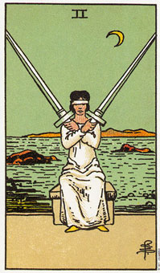

宝剑二画一个女人坐在一张石凳上，蒙着双眼，双手交叉于胸前，手中握着两把剑。在她背后的海洋将她和陆地分开，而此时正是夜晚。这张牌中唯一强烈的颜色是月亮和鞋子的黄色。
这两把剑交叉与她胸前，是为了要保护她远离痛苦的感情，身上的衣服和石凳一样，是灰色的，暗示着感情渐趋冷漠，因为他拒绝面对另它痛苦的因素。假如你不让任何东西接近你，就没有任何东西能伤害你了。她的眼罩是自己绑上去的，因为她的双手是自由的，如果她决定要将它拿掉的话，自然办得到。
在这张牌中有着愤怒和恐惧的混合物。剑是随时蓄势待发以攻击威胁她的事物，而眼罩则代表她企图躲藏起来，不愿面对让她害怕的原因或事实。她已经从生活中撤退，并等待这些事情平静下来。与其造成更严重的骚动，她宁可选择无聊和停滞不前。
事实上，事情是已经平静下来了，唯一留下的骚动是她的思想和心中的骚动。这张牌所叙述的是，为了明白哪些情绪的意义，而自生活中退出的行动。对外面世界的恐惧，可能是没有道理的，而唯一能确定的办法就是摘掉眼罩，亲自去看清楚。
身后的水暗示情绪上的不稳定，而这个不稳定可以在她自己内心得到解决。有时候这个二代表的是规避某些特殊的话题和场合，因为它们让人联想到某些尚未解决的恐惧。
大体上的意义
从日常生活的角度来看，宝剑二以为你需要作决定或在两个选择(两把剑)当中择其一。在你做出明确的决定之前，要尽可能的解决任何感情上的冲突。为了理清并解决感情上的冲突，现在正是从生活中退隐的时候了。
正视你所恐惧的，如此你才能明了你周遭事物对你有什么意义。一个正确决定的报偿正等着你，它的第一个回报是解脱感，这解脱感来自于你能够锁定一个方向。
两性关系上的意义
宝剑二意味有一段时间会从两性关系当中退缩下来，这是为了要理清你对事情的感觉。或许你曾经在某个两性关系当中受过伤，而在你重返正常的生活之前，需要一段时间来疗伤止痛，并从这些经验中得到一些教训。
有时候这张牌可能是暗示在两个两性关系的机会中做选择，或是决定你准备让伴侣和你有多接近。如果你所下的这个决定能够结合思考(剑)和感情(水)的话，那它将有效用的多了。
倒立的宝剑二
当宝剑二倒立时，意味着你的情绪相当混乱，如此一来你要下决定就更加困难了。情绪、恐惧或怨恨无法永远被压制，当这张牌倒立时，即代表着情绪或压迫性的恐惧一步步的占上风，因为当事人不去面对它们。通常这些恐惧都是毫无由来或脱离现实的。
当你越努力的找寻正确的选择时，更多的选择机会就会出现，这张牌代表你试图透过思考来控制你的情绪，或让你的情绪理性化。在情绪得以沉湎下来之前，去感受和认知它们是相当重要的。由于你越来越清楚自己的感受，因而你对自己既自己的处境的理解也越多。
就日常生活的角度来看，倒立的宝剑二表示迟疑不觉所引起的情绪上的不安。
举个例子，安到我这里占卜的三年来，她和伴侣一直处的不好。每次当我建议她花些时间去感觉她的需求时，她总是举出一大串可能的选择，以及每一种选择的不切实际或不明智的理由。当她努力的要去下一个决定的时候，并没有考虑到她的感觉，而心智则提出无数的选择，但鲜少具有真实的可能性。她花了三年时间思考她的两性关系，却依然找不到解决的良方。